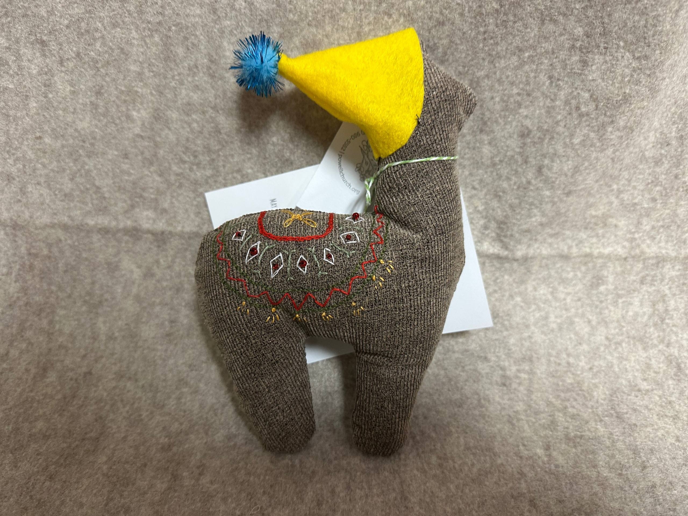
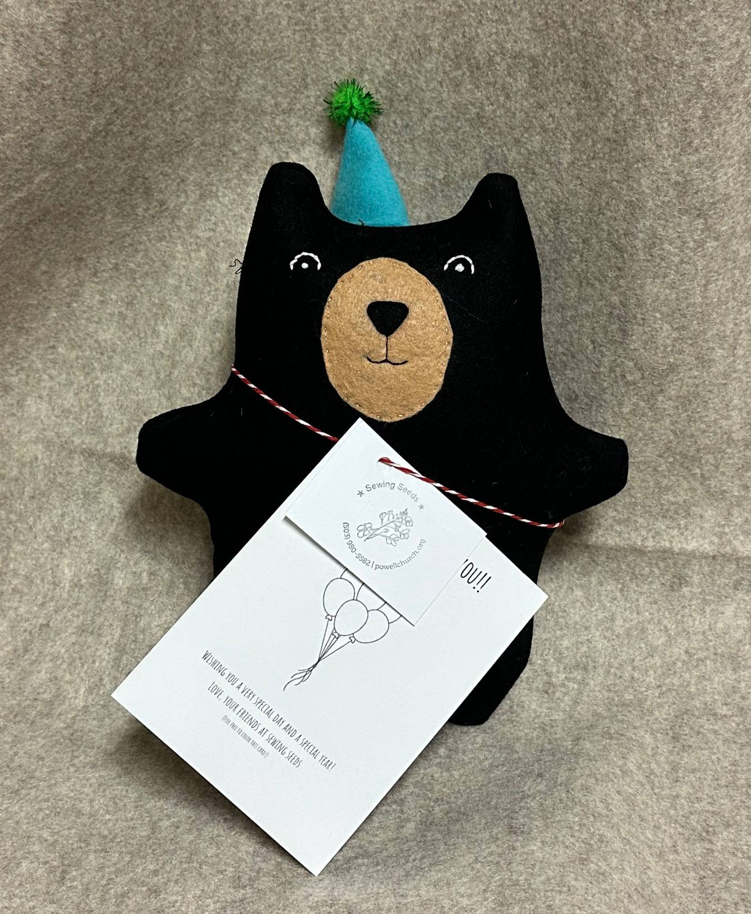
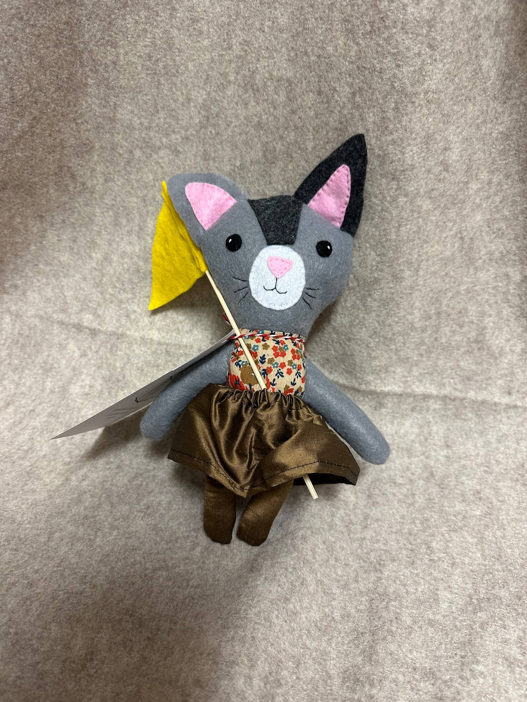
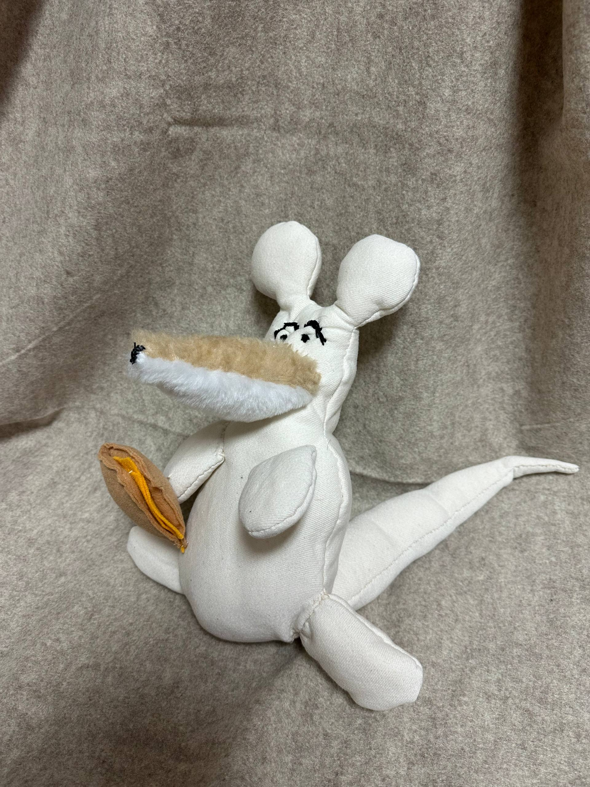
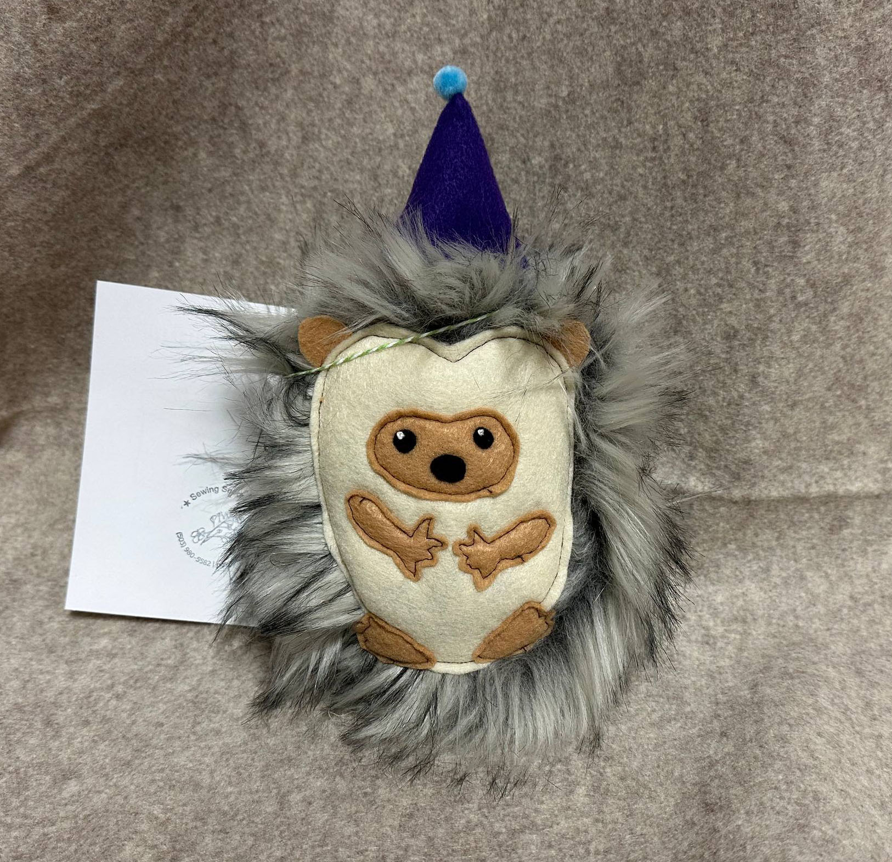
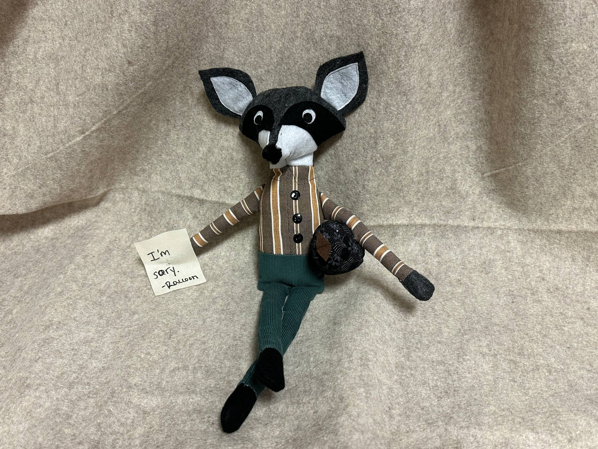
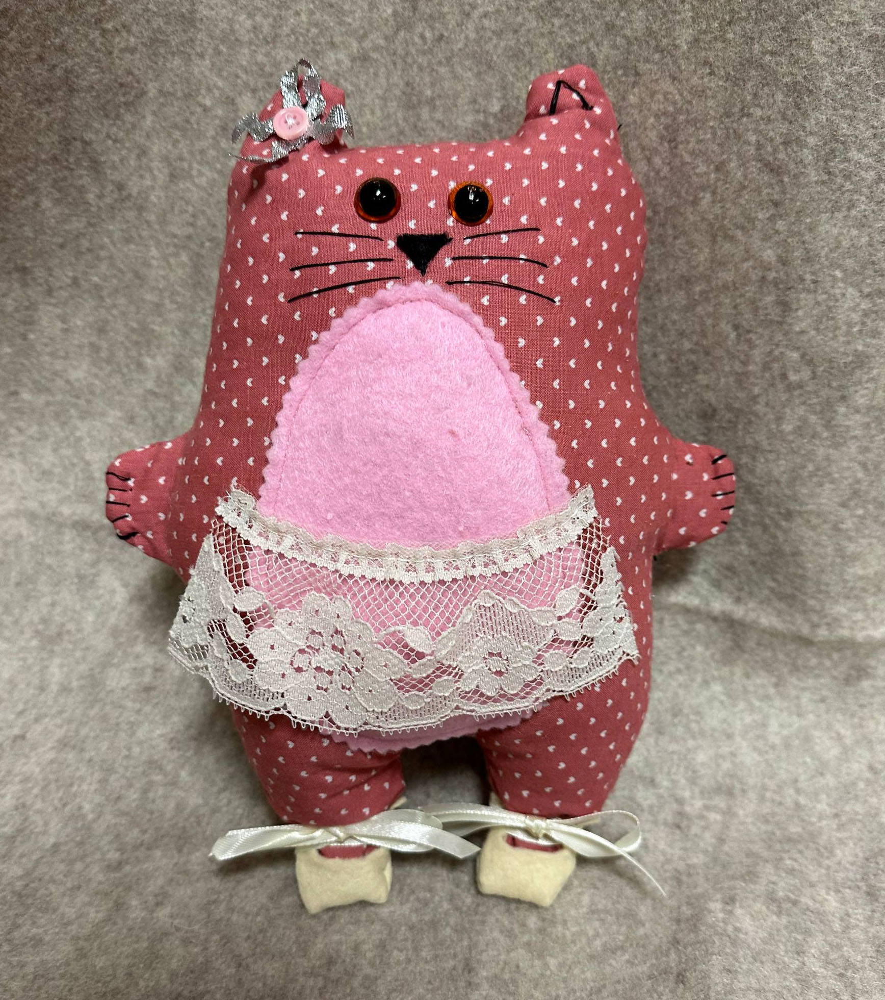
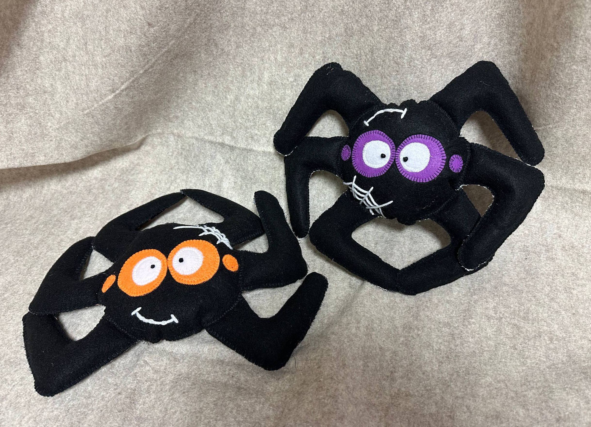

Luna – sewn with a tiny moon charm to remind children of hope.

Theo – a soft bear stitched for bravery before surgery.

Maya – her dress twirls through hospital hallways.

Sunny – a cheerful rag doll bringing warmth.

Hope Quilt – every square sewn by different hands.

Oliver – tall giraffe carrying kids’ drawings.

Soft handmade pillow for comfort.

Tiny plush friend donated to the NICU unit.